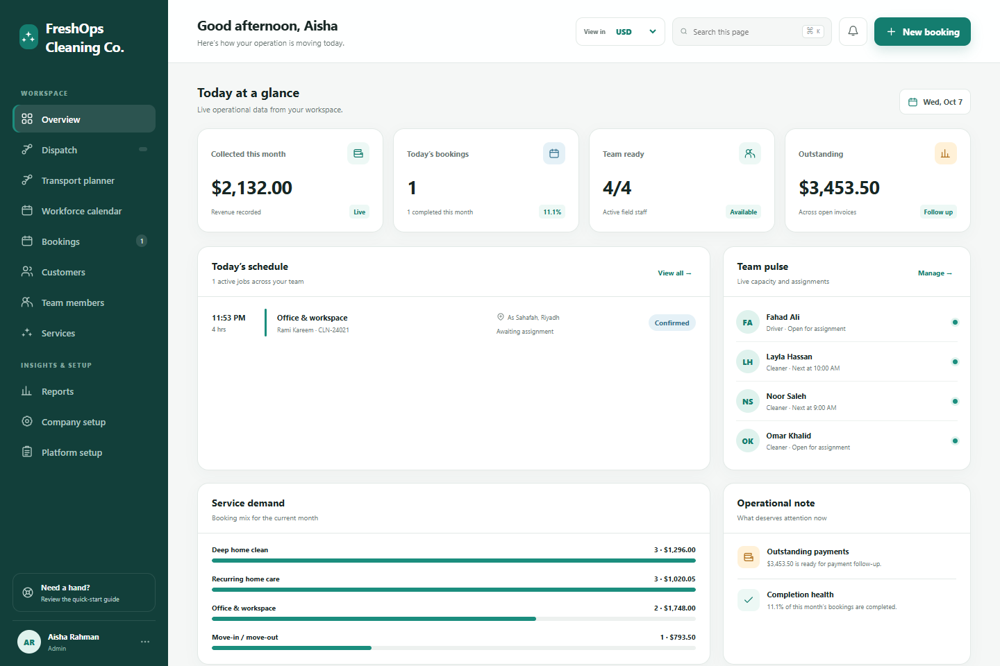
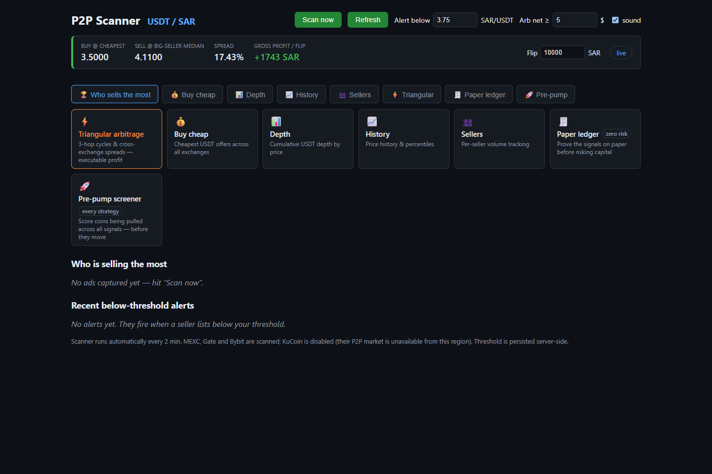
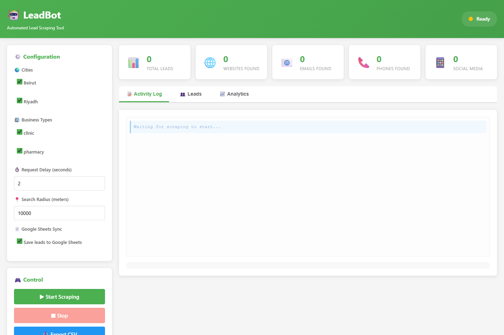
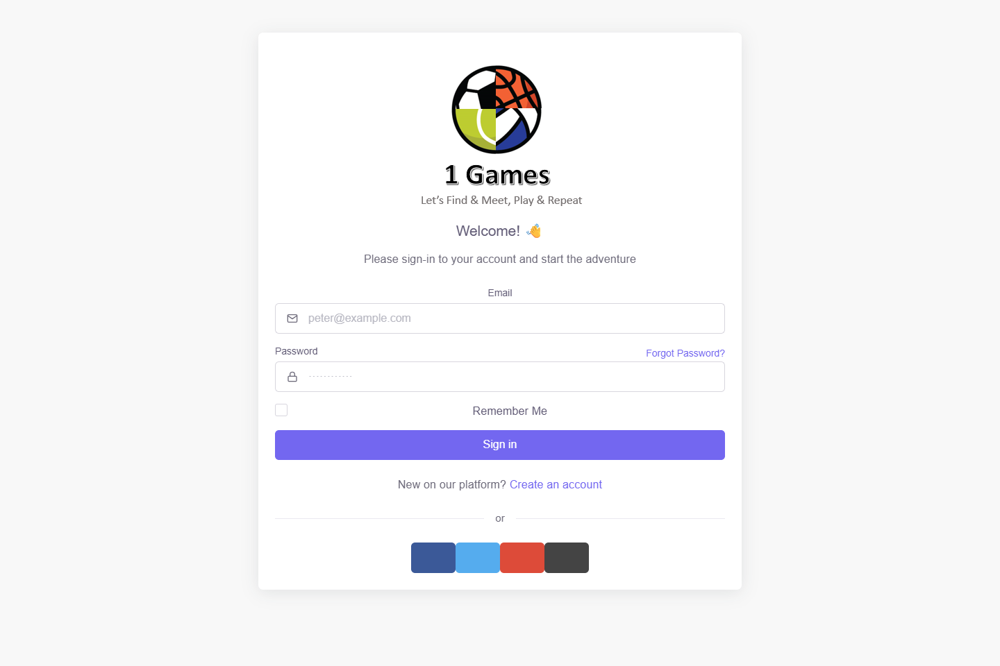
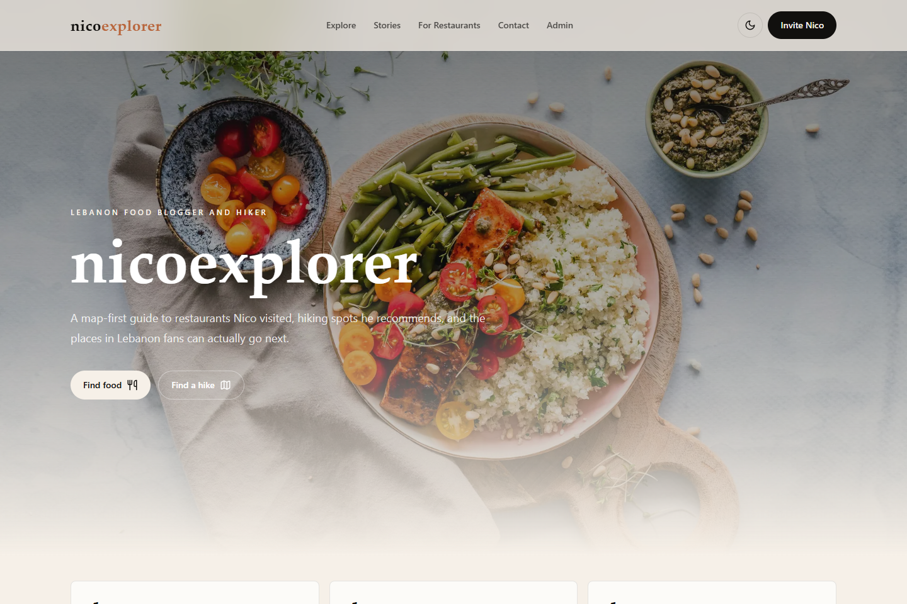

5K+
إشعارات يومية
خدمة للبريد الإلكتروني والرسائل النصية، مع إعادة المحاولة ومعالجة الرسائل المتعذرة والمراقبة.
Emcrey · التكاملات المصرفيةمهندس برمجيات أول · Java و.NET
أنا بيتر. أطوّر التكاملات المصرفية ومنصات الأعمال وحلول الأتمتة، من واجهات برمجية موثوقة إلى واجهات يستخدمها الناس.
مقيم في الرياض · أعمل عن بُعد · تطوير الأنظمة الخلفية والتطبيقات المتكاملة


هندسة برمجيات بنتائج قابلة للقياس
استعرض خبرتي5K+
خدمة للبريد الإلكتروني والرسائل النصية، مع إعادة المحاولة ومعالجة الرسائل المتعذرة والمراقبة.
Emcrey · التكاملات المصرفية80%
عمليات استيراد وتصدير عبر Excel مع التحقق من البيانات لمنصة وساطة تأمين.
Clover Broker · التأمين85%
اختبارات xUnit لدعم وحدات تطبيقات المؤسسات وعمليات العمل.
Onsite Snagging · برمجيات المؤسسات01 / مشاريع مختارة
سبعة مشاريع. تحديات متنوعة.
وتركيز واحد على برمجيات مفيدة تعمل فعلاً.
الذكاء الاصطناعي وتجربة العملاء
روبوت محادثة يضع الدعم داخل المنتج.
واجهة دعم قابلة للتضمين تجمع محادثات الذكاء الاصطناعي والمراسلة والمحتوى الإرشادي، ليستخدمها العملاء دون مغادرة الموقع.
ما طوّرته. تطبيق الويب والخدمات الخلفية وواجهة الدعم المضمّنة، بما يشمل إعدادات خاصة بكل جهة وعمليات المحادثة.
هدف المنتج. جمع الدعم البشري والذكاء الاصطناعي في واجهة سهلة الاستخدام، بتصميم متجاوب ودعم للعربية والإنجليزية.
واجهة تجريبية إدارة عمليات الأعمال
مساحة واحدة لإدارة شركة تنظيف: الحجوزات والعملاء وتوزيع المهام والفرق والمدفوعات.
ما طوّرته. منصة عمليات لعدة شركات، مع صلاحيات حسب الأدوار والجدولة وقواعد التسعير والحجوزات المتكررة والتقارير المالية.
هدف المنتج. ربط المكتب والفريق الميداني بلوحة توزيع المهام وسجل العملاء وعمليات عمل قابلة للتهيئة.

أدوات الأسواق والأتمتة
مسح استراتيجيات TradingView ومتابعة العملات الرقمية عبر P2P لتحويل بيانات السوق إلى قوائم متابعة وتنبيهات واضحة.
TradingView. مسح آلي لفجوات الأسعار قبل افتتاح السوق والاستراتيجيات، مع فحوص مجدولة ومنع التكرار وتقارير عبر Telegram.
أسواق P2P. مقارنة أسعار المنصات ومرشّحات قابلة للتهيئة وتتبع تاريخي وتنبيهات. تعرض الصورة لوحة P2P، بينما يعمل مسح TradingView بشكل منفصل.
هدف المنتج. جعل البحث قابلاً للتكرار وإظهار ظروف السوق ذات الصلة للمراجعة اليدوية.

جمع العملاء المحتملين
بحث آلي عن الشركات وبيانات التواصل، مع لوحة لإدارة جمع النتائج وتصديرها.
معاينة الواجهة · بيانات فارغة
ما طوّرته. مسار بحث غير متزامن يستخدم عدة محركات بحث، مع استخراج بيانات التواصل ومرشّحات للشركات ولوحة ويب.
هدف المنتج. تقليل البحث المتكرر وتنظيم النتائج من خلال تصدير CSV والتكامل مع Google Sheets.

الرياضة والحجوزات
منصة تربط اللاعبين بالأندية والملاعب، مع اكتشاف المنشآت والحجوزات والتواصل المباشر.
معاينة الواجهة · شاشة تسجيل الدخول
ما طوّرته. عمليات الأندية والملاعب والحجوزات، تدعمها واجهات برمجية وخدمة محادثة مباشرة منفصلة.
هدف المنتج. مساعدة اللاعبين في العثور على الملاعب وتنسيق الحجوزات. يشمل عملي الأوسع في المشروع أيضاً Flutter والتكامل مع Google Maps، كما هو موضح في سيرتي الذاتية.

التدريب وتجربة الأعضاء
موقع تدريب يجمع تقييماً موجّهاً وخططاً تدريبية مخصصة وبوابة خاصة للأعضاء.
ما طوّرته. موقع تدريب متجاوب، مع تقييم يخضع للتحقق ومحرك محلي لإعداد الخطط وملفات PDF بهوية الموقع وآلية مراجعة ونشر للمدرّب.
تجربة الأعضاء. تسجيل الدخول برمز يُرسل بالبريد، وسجلات التمارين والمتابعة اليومية ورسوم التقدم وتخزين خاص للصور، باستخدام Cloudflare D1 وR2 وDrizzle ORM.

الطعام والسفر والاستكشاف
موقع لمدوّن طعام يحوّل زيارات المطاعم وتوصيات المشي في الطبيعة إلى دليل قابل للبحث لاستكشاف لبنان.
معاينة محلية للموقع · محتوى نموذجي
ما طوّرته. موقع متجاوب للطعام والمشي في الطبيعة، يشمل أدلة قابلة للبحث وخرائط تعتمد على الإحداثيات وتفاصيل الأماكن وروابط Instagram وطلبات منظمة لزيارة المطاعم.
هدف المنتج. تسهيل العثور على توصيات صانع المحتوى، وتوفير وسيلة واضحة لأصحاب المطاعم لطلب زيارة.
لقطات من مشاريعي. اضغط على أي صورة لعرضها بحجم أكبر.
02 / الخبرة
من التكاملات المصرفية إلى منصات الأعمال، أمتلك خبرة عملية عبر دورة تطوير البرمجيات كاملة.
اختر نسخة السيرة الذاتيةمطوّر Java أول للأنظمة الخلفية · الرياض
أنظمة مصرفية للاعتمادات المستندية وخطابات الضمان. خدمات مصغّرة باستخدام Spring Boot وتكاملات خارجية وIBM MQ وKafka وخدمات الإشعارات.
مطوّر تطبيقات متكاملة باستخدام .NET · عمل حر
منصة وساطة تأمين متكاملة تشمل الوثائق والمدفوعات والتقارير والإدارة، مع النشر على Azure وأتمتة التسليم.
قائد تطوير تطبيقات الويب المتكاملة
وحدات تطبيقات مؤسسات وعمليات مستندات ونماذج ديناميكية وواجهات برمجية لتطبيقات الجوال واختبارات آلية. قدت تخطيط دورات العمل ومراجعة الشيفرة.
Exquitech · Neorcha · GridPos
تطوير تطبيقات متكاملة وتطبيقات جوال وخدمات Java وتطبيقات سطح مكتب في الضيافة وضبط الجودة والتجزئة.
03 / نبذة عني
يربط عملي بين الأنظمة التي تعتمد عليها الشركات والبرمجيات التي يستخدمها الناس كل يوم.
طوّرت تكاملات مصرفية في الرياض وعمليات تأمين وتطبيقات مؤسسات. تنعكس هذه الخبرة على طريقتي في بناء المنتجات: فهم قواعد العمل، وتطوير أنظمة خلفية موثوقة، وجعل الخطوة التالية واضحة للمستخدم.
أطبّق هذا النهج في مشاريعي المستقلة، من روبوت دعم مضمّن إلى مساحة لإدارة عمليات التنظيف وبوابة لأعضاء موقع تدريب. تجمع هذه المشاريع الواجهات البرمجية والبيانات وواجهات الاستخدام والنشر.
لديّ أيضاً خبرة في قيادة تخطيط دورات العمل ومراجعة الشيفرة ضمن فريق من ثلاثة مطوّرين. أهتم بتفاصيل التنفيذ مع الحفاظ على رؤية شاملة لتسليم المشروع.
بكالوريوس في علوم الحاسوب
الجامعة اللبنانية الكندية · 2018
Java · C# · Spring Boot · ASP.NET Core
واجهات REST · خدمات مصغّرة · أنظمة قائمة على الأحداث
SQL Server · PostgreSQL · MySQL
Entity Framework · Dapper · Kafka · IBM MQ
JavaScript · TypeScript · React · Python · Flutter
Azure · AWS · Docker · GitHub Actions
تطوير الأنظمة الخلفية بمستوى متقدم باستخدام Java أو .NET
منصات أعمال متكاملة · تكامل الواجهات البرمجية
لمسؤولي التوظيف وفرق التعيين
اختر نسخة السيرة الذاتية المناسبة لمنطقتك.
تتضمن كل نسخة خبرتي ومشاريعي وروابط ملفاتي المهنية.
ملفات السيرة الذاتية باللغة الإنجليزية.
04 / لنبنِ شيئاً مفيداً
مقيم في الرياض.
لنتحدث عن مشروعك أو فريقك الهندسي.